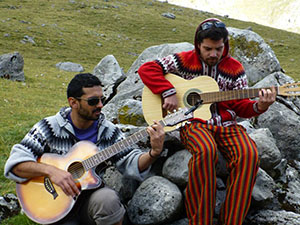

על עצמי
שלום לכם אנשים יקרים
שמי תומר פלום, בן 28 וסטודנט להנדסת תוכנה ב"שנקר".
ילדותי
נולדתי בביה"ח אסף הרופא, ומרגע לידתי ועד לגיל 7 הורי עברו 5 דירות שונות.
הספקתי לגור בקיבוץ מעגן, דגניה א', אלומות ומשם התקדמנו חזרה למרכז לקיבוץ גבעת ברנר. בגיל 7 הורי עברו
למקום שבו זכורים לי כל חיי - גבעת עזר.
זהו ישוב קטן ונחמד ששייך למועצה איזורית באר טוביה, שם גדלתי התחנכתי והשכלתי.
הצבא
לאחר סיום 12 שנות לימוד, התגייסתי ליחדת הלוחמה האלקטרונית.
ובקשר למה שעשיתי שם בפועל - איני יכול להרחיב על כך מנסיבות של סיווג בטחוני.
"תחילת החיים"
לאחר שהשתחררתי, תכננתי לעשות את הטיול הגדול של חצי שנה לדרום אמריקה כמו רוב החיילים המשוחררים שרק מחפשים את החופש.
עם זאת, כל התכנונים על הטיול הגדול ירדו לטמיון כשאבי - יוסי פלום - הגה במוחו רעיון לפיתוח תוכנה ייחודית עבור בתי ספר: לוח מודעות אינטרקטיבי על מסכים.
כיום, אני והוא מנהלים את חברת M-on-TV שמספקת שירות של מערכת הודעות חכמה ואינטרקטיבית עבור מוסדות שונים בינהם
בתי ספר, ספריות עירוניות, חדרי כושר, דיורים מוגנים, בתי מלון וכו'...
הטיול הגדול

כשהייתי בן 26, אחי הקטן - אז בן 23, בדיוק השתחרר מהצבא וטס לו לחצי שנה לדרום אמריקה כדי להגשים את החלום שלי ושלו.
לאחר שלושה חודשים בלעדיו, הבנתי שהנה ההזדמנות הגיעה.
יצאתי מהמקלחת ביום בהיר אחד כשבליבי ההחלטה לסגור כרטיס לדרום אמריקה ולהפתיע את אחי.
לאחר שבועיים, נפגשנו בקוסקו וטיילנו שלושה חודשים נוספים ביחד - טיול שאותו אזכור כל ימי חיי.
הלימודים ב"שנקר"
אדם חכם אמר פעם ש-
האדם מתכנן תוכניות ואלוהים צוחק
.
במילים אחרות, אף פעם אי אפשר לדעת לאן החיים יקחו אותך.
בזמנו תכננתי להשתחרר מהצבא, לעשות פסיכומטרי, טיול חצי שנה לדרום אמריקה ואז להתחיל ללמוד הנדסת תוכנה באונ' בן-גוריון.
בעקבות המסלול שחיי לקחו אותי, הבנתי שעבודה במשרה מלאה בחברה שבנינו ולימודי תואר ראשון באונ' בן-גוריון זה רעיון לא פרקטי בעליל.
לכן החלטתי להירשם בגיל 27, לתכנית ערב לתואר בהנדסת תוכנה בשנקר על מנת שאוכל לשלב את הלימודים ביחד עם העבודה המאוד תובענית הזו.